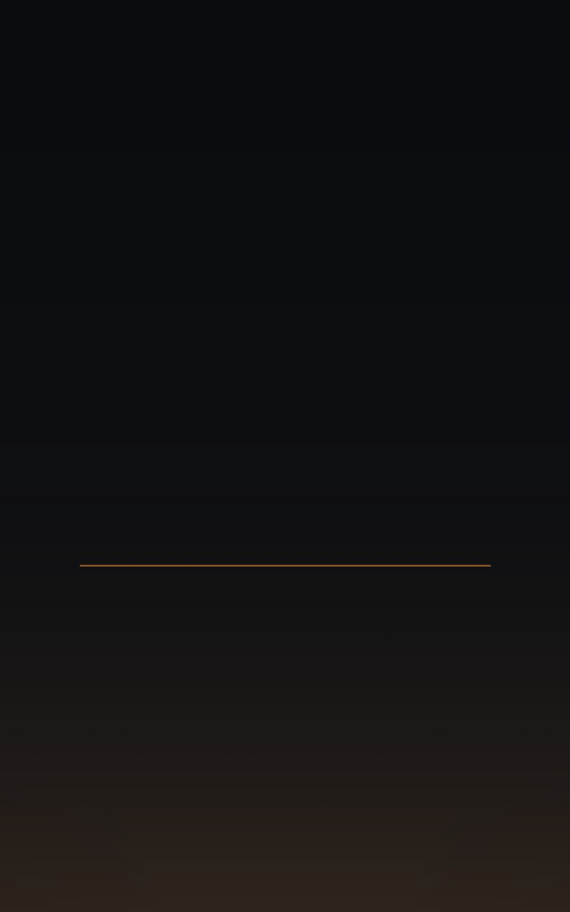

The Gravity King
Su Barrow la casta è un'altitudine. Poi un ingegnere nato nel profondo trova la pietra che rende negoziabile la fisica.
Su Barrow la casta è un'altitudine. Poi un ingegnere nato nel profondo trova la pietra che rende negoziabile la fisica.
Barrow è un mondo immenso e di rapida rotazione, dove il peso effettivo varia con l'altitudine — e quella differenza è una civiltà. Le Corone, che portano nomi di stelle, stanno leggere sugli alti Nidi; i Compressi vivono poco, dalle ossa dense, morendo presto nei Fondi, a scavare per le altezze sotto una legge di casta benedetta dall'Ordine del Piombo, la cui dottrina è la verticalità: ciò che cade a piombo è vero. Garrin Quern, ingegnere degli argani dei Fondi, trova una pietra che risponde al peso come la leva risponde al carico — e solleva la sua gente fuori dalla Pressa che la schiaccia. Primo romanzo del ciclo delle Reliquie, segue l'intero arco del suo regno: l'ascesa, il rifacimento e la lunga lezione che ogni regno fondato su un miracolo prima o poi deve pagare — quanto costa il sollevamento, e dove va a cadere il costo.
Libro 1 di The Relic Protocol
I morti hanno votato.
The Relic Protocol
Su Barrow la casta è un'altitudine. Poi un ingegnere nato nel profondo trova la pietra che rende negoziabile la fisica.

L'hanno assunta per rubare un cubo nero. Ora la luce si spegne ovunque lei si fermi.

Alla fine della luce delle stelle la regola è semplice: catalogare tutto, non toccare nulla — e, quando chiede un lettore, rifiutare.
Apri il libro — il mondo è dentro.
Sfoglia lo scaffale · 43